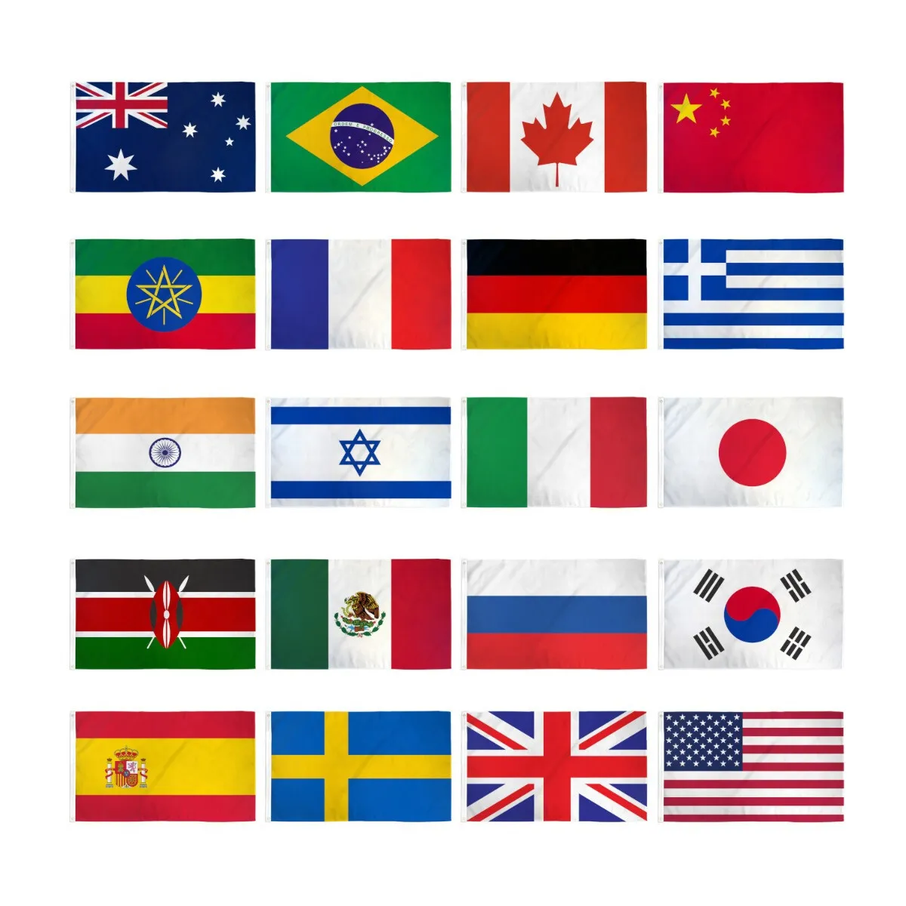

Flags
A flag is a piece of fabric (most often rectangular) with distinctive colours and design. It is used as a symbol, a signalling device, or for decoration. The term flag is also used to refer to the graphic design employed, and flags have evolved into a general tool for rudimentary signalling and identification, especially in environments where communication is challenging (such as the maritime environment, where semaphore is used). Many flags fall into groups of similar designs called flag families.[1] The study of flags is known as "vexillology" from the Latin vexillum, meaning "flag" or "banner". National flags are patriotic symbols with widely varied interpretations that often include strong military associations because of their original and ongoing use for that purpose. Flags are also used in messaging, advertising, or for decorative purposes. Some military units are called "flags" after their use of flags. A flag (Arabic: لواء) is equivalent to a brigade in Arab countries. In Spain, a flag (Spanish: bandera) is a battalion-equivalent in the Spanish Legion.
egypt flags

The national flag of Egypt (عَلَمْ مِصر [ˈʕælæm mɑsˤɾ]) is a tricolour consisting of the three equal horizontal red, white, and black bands of the Egyptian revolutionary flag that dates back to the 1952 Egyptian Revolution. The flag bears Egypt's national emblem, the Egyptian eagle of Saladin, centred in the white band.